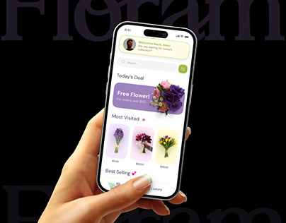
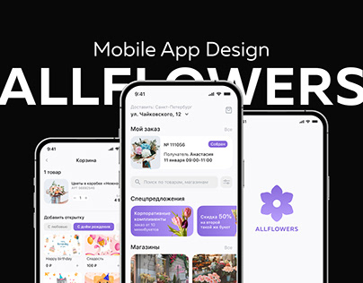

Casos Prácticos

Rediseño de E-commerce
Rol: Diseñador UX/UI
Mejora de la experiencia de compra online para una florería.
Ver Detalles

App de Pedidos
Rol: Investigador UX
Creación de una app móvil para pedidos personalizados.
Ver Detalles

Branding Florería
Rol: Diseñador UX y Branding
Desarrollo de una identidad de marca para una florería de lujo.
Ver Detalles